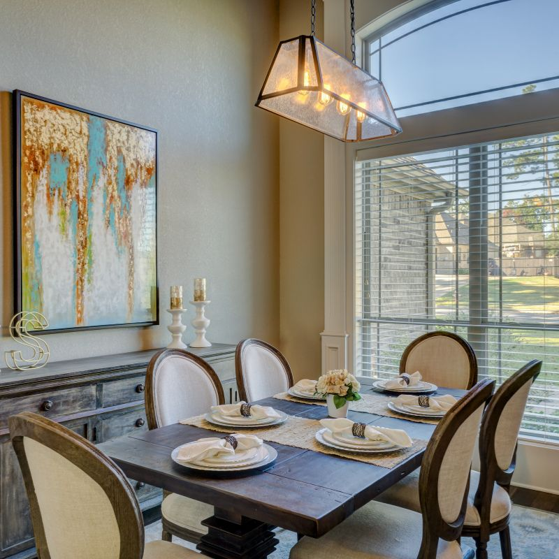
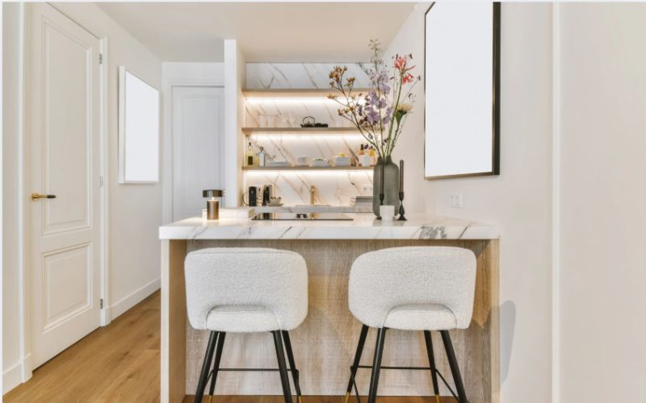
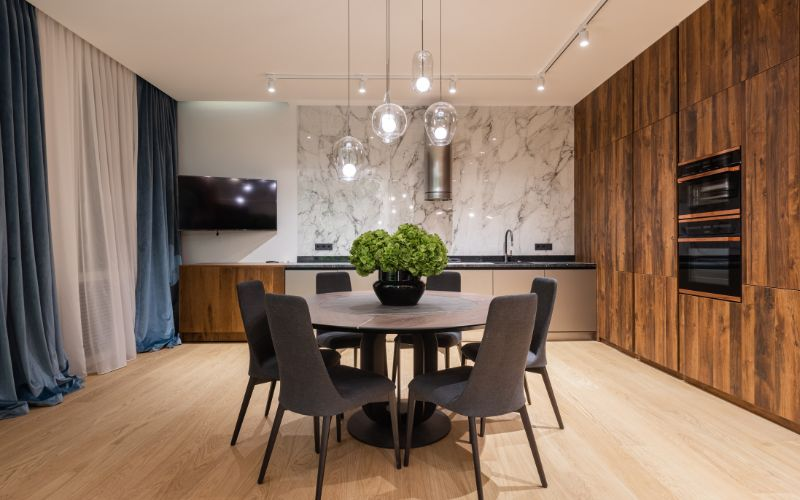
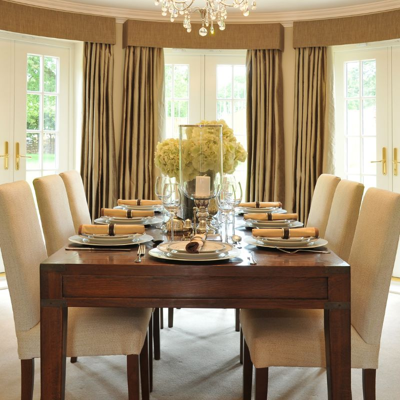
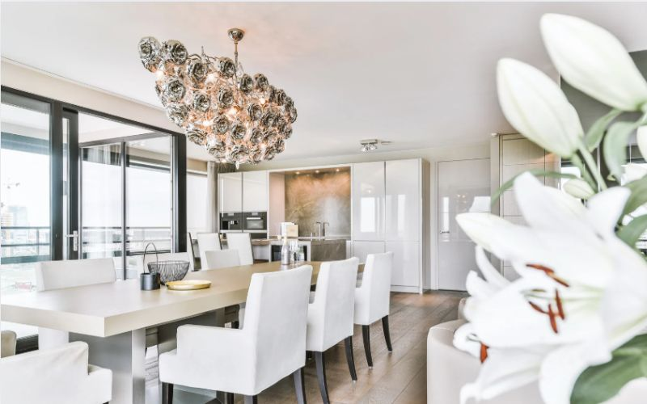
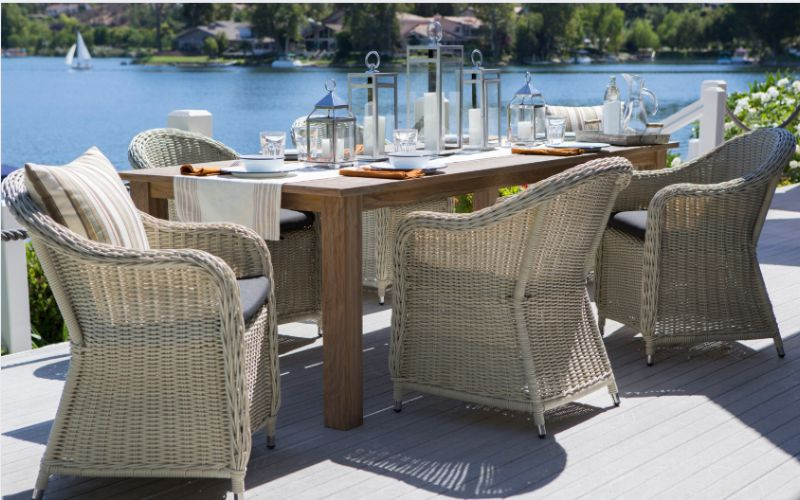

Bí quyết chọn ghế ngồi bàn ăn đẹp, bền, không lỗi thời

Bàn ăn là trái tim của ngôi nhà, nơi sum họp gia đình sau một ngày dài, nơi chia sẻ bữa cơm ấm cúng
và những câu chuyện thường nhật. Và ghế ngồi bàn ăn, không chỉ đơn thuần là nơi để ngồi, mà còn là
yếu tố quan trọng góp phần tạo nên không gian bếp hoàn hảo, thể hiện gu thẩm mỹ của gia chủ. Lựa
chọn ghế ăn phù hợp không chỉ nâng cao trải nghiệm ẩm thực mà còn tạo nên không gian ấm cúng, sang
trọng cho gia đình.
Xác định nhu cầu và phong cách ghế ngồi bàn ăn
Việc lựa chọn ghế ngồi bàn ăn phù hợp giống như việc chọn một mảnh ghép hoàn hảo cho bức tranh tổng
thể không gian bếp. Trước khi bị choáng ngợp bởi vô vàn mẫu mã ghế ăn đẹp hiện đại trên thị trường,
hãy xác định rõ nhu cầu và phong cách của gia đình bạn. Đây là bước đầu tiên và cũng là bước quan
trọng nhất để tìm kiếm được những chiếc ghế ăn ưng ý.

Mẫu ghế ngồi bàn ăn hiện đại
Nhu cầu sử dụng ghế ngồi bàn ăn
Trước khi đắm chìm trong thế giới đa dạng của các mẫu ghế ngồi bàn ăn, hãy dừng lại một chút và tự
hỏi: Gia đình bạn thực sự cần gì? Việc xác định rõ nhu cầu sử dụng sẽ giúp bạn khoanh vùng lựa chọn
và tìm kiếm được những chiếc ghế ăn phù hợp nhất. Hãy cùng xem xét những yếu tố quan trọng sau:
Số lượng thành viên
Đây là yếu tố cơ bản nhất cần xem xét. Gia đình bạn có bao nhiêu người? Nếu gia đình nhỏ, một bộ bàn
ăn 4 ghế gọn gàng là lựa chọn hợp lý. Ngược lại, nếu gia đình đông thành viên, bạn cần cân nhắc bàn
ăn lớn hơn, kèm theo đó là số lượng ghế ngồi bàn ăn tương ứng. Đừng quên tính toán cả những vị khách
thường xuyên ghé thăm nhà bạn để lựa chọn số lượng ghế ăn sao cho phù hợp nhé.
Tần suất sử dụng
Bạn thường xuyên sử dụng bàn ăn cho các bữa cơm hàng ngày hay chỉ dùng vào dịp đặc biệt, lễ tết? Nếu
bàn ăn là nơi diễn ra những bữa cơm sum họp mỗi ngày, hãy ưu tiên những chiếc ghế ăn bền bỉ, chắc
chắn, dễ dàng vệ sinh. Nếu bạn chỉ sử dụng bàn ăn vào những dịp đặc biệt, có thể lựa chọn những mẫu
ghế ăn cầu kỳ, sang trọng hơn để tạo điểm nhấn cho không gian.
Đối tượng sử dụng
Gia đình có trẻ nhỏ hay người lớn tuổi không? Đây là yếu tố quan trọng ảnh hưởng đến thiết kế và chất
liệu ghế ăn. Nếu có trẻ nhỏ, nên chọn ghế ăn làm từ chất liệu an toàn, không góc cạnh sắc nhọn, dễ
lau chùi. Đối với người lớn tuổi, những chiếc ghế ngồi bàn ăn có tay vịn, lưng tựa êm ái sẽ mang lại
sự thoải mái và hỗ trợ tốt hơn cho tư thế ngồi.
Phong cách thiết kế ghế ngồi bàn ăn
Một bộ ghế ăn đẹp không chỉ đáp ứng nhu cầu sử dụng mà còn phải thể hiện được gu thẩm mỹ của gia chủ.
Phong cách thiết kế của ghế ngồi bàn ăn cần hài hòa với tổng thể không gian bếp, tạo nên sự thống
nhất và tinh tế.
Phong cách tổng thể: Không gian bếp nhà bạn mang phong cách hiện đại, cổ điển, tối giản
(minimalist), vintage, Industrial, Rustic, hay Scandinavian…? Ghế ăn cần phải hài hòa với phong
cách thiết kế tổng thể của không gian bếp và ngôi nhà. Một bộ ghế ăn kiểu dáng cổ điển sẽ lạc
lõng trong một căn bếp hiện đại, và ngược lại. Sự đồng nhất về phong cách sẽ tạo nên một không
gian sống hài hòa và tinh tế.
Xu hướng mới nhất: Bạn luôn muốn cập nhật những xu hướng nội thất mới nhất? Việc tham
khảo các
mẫu ghế ngồi bàn ăn theo xu hướng mới nhất sẽ giúp bạn tạo nên không gian bếp hiện đại và ấn
tượng. Tuy nhiên, hãy cân nhắc lựa chọn những thiết kế không lỗi thời, mang tính ứng dụng cao để
đảm bảo tính thẩm mỹ lâu dài. Một chiếc ghế ăn đẹp không chỉ hợp thời mà còn phải trường tồn
cùng thời gian.
Việc xác định nhu cầu và phong cách là nền tảng quan trọng để lựa chọn được bộ ghế ngồi bàn ăn ưng ý.
Hãy dành thời gian suy nghĩ và cân nhắc kỹ lưỡng các yếu tố trên để tìm ra những chiếc ghế ăn hoàn
hảo cho không gian bếp của gia đình bạn.
Chất liệu ghế ngồi bàn ăn & độ bền
Chất liệu là yếu tố then chốt quyết định đến tuổi thọ, tính thẩm mỹ và giá cả của ghế ngồi bàn ăn.
Việc lựa chọn chất liệu phù hợp không chỉ đáp ứng nhu cầu sử dụng mà còn góp phần tạo nên phong cách
riêng cho không gian bếp. Hãy cùng Flexhouse VN khám phá ưu nhược điểm của từng loại chất liệu để
tìm ra lựa chọn hoàn hảo cho ngôi nhà của bạn.

Bộ ghế ngồi bàn ăn phong cách tối giản
Ghế ngồi bàn ăn gỗ tự nhiên
Gỗ tự nhiên luôn là biểu tượng của sự sang trọng, đẳng cấp và gần gũi với thiên nhiên. Ghế ăn gỗ tự
nhiên mang đến vẻ đẹp ấm cúng, tinh tế, đồng thời thể hiện gu thẩm mỹ tinh tường của gia chủ. Độ bền
bỉ vượt trội và tuổi thọ cao khiến gỗ tự nhiên trở thành lựa chọn đầu tư thông minh, lâu dài.
Từ gỗ sồi mộc mạc đến gỗ óc chó sang trọng, gỗ hương quý phái, mỗi loại gỗ đều sở hữu vẻ đẹp riêng,
dễ dàng kết hợp với nhiều phong cách nội thất khác nhau. Tuy nhiên, giá thành cao và yêu cầu bảo
quản kỹ lưỡng là những điểm cần cân nhắc khi lựa chọn ghế ngồi bàn ăn gỗ tự nhiên.
Ghế ngồi bàn ăn gỗ công nghiệp
Gỗ công nghiệp là giải pháp tiết kiệm chi phí mà vẫn đảm bảo tính thẩm mỹ cho không gian bếp. Với giá
thành phải chăng, đa dạng mẫu mã, màu sắc và kiểu dáng, ghế ăn gỗ công nghiệp đáp ứng nhu cầu đa
dạng của người tiêu dùng. Công nghệ sản xuất hiện đại giúp gỗ công nghiệp có khả năng chống mối mọt,
ẩm mốc tốt hơn so với gỗ tự nhiên, đồng thời dễ dàng vệ sinh, lau chùi.
Tuy nhiên, độ bền của gỗ công nghiệp không bằng gỗ tự nhiên và dễ bị bong tróc bề mặt nếu tiếp xúc
thường xuyên với nước. Các loại gỗ công nghiệp phổ biến như MDF, MFC, HDF đều có những ưu nhược điểm
riêng, cần được cân nhắc kỹ lưỡng trước khi lựa chọn.
Ghế ngồi bàn ăn kim loại
Ghế ăn kim loại mang đến vẻ đẹp hiện đại, cá tính và mạnh mẽ, phù hợp với phong cách Industrial hoặc
hiện đại. Chất liệu kim loại chắc chắn, bền bỉ, chịu được tải trọng lớn, đảm bảo an toàn cho người
sử dụng. Tuy nhiên, kim loại có thể tạo cảm giác lạnh lẽo vào mùa đông, vì vậy nên kết hợp với đệm
ngồi để tăng thêm sự thoải mái. Ghế ngồi bàn ăn kim loại thường được ưa chuộng trong các thiết kế
không gian mở, tạo điểm nhấn ấn tượng cho phòng bếp.
Ghế ngồi bàn ăn nhựa
Nhựa là chất liệu nhẹ, dễ di chuyển, vệ sinh và có giá thành rẻ, phù hợp với không gian trẻ trung,
năng động hoặc những gia đình có trẻ nhỏ. Sự đa dạng về màu sắc của ghế ăn nhựa giúp bạn dễ dàng lựa
chọn sản phẩm phù hợp với phong cách trang trí. Tuy nhiên, độ bền của nhựa không cao bằng các chất
liệu khác và dễ bị trầy xước trong quá trình sử dụng. Ghế ngồi bàn ăn nhựa là lựa chọn tiết kiệm cho
những ai đang tìm kiếm giải pháp nội thất ngắn hạn hoặc cho không gian ngoài trời.
Việc lựa chọn chất liệu ghế ăn phụ thuộc vào nhiều yếu tố như ngân sách, nhu cầu sử dụng, phong cách
thiết kế và sở thích cá nhân. Hãy cân nhắc kỹ lưỡng các ưu nhược điểm của từng loại chất liệu để đưa
ra quyết định phù hợp nhất, mang đến sự thoải mái và thẩm mỹ cho không gian bếp nhà bạn.
Kích thước & kiểu dáng ghế ngồi bàn ăn
Không chỉ chất liệu, kích thước và kiểu dáng ghế ăn cũng đóng vai trò quan trọng trong việc tạo nên
sự thoải mái khi dùng bữa và tính thẩm mỹ cho không gian bếp. Một chiếc ghế ngồi bàn ăn đẹp, kích
thước phù hợp sẽ giúp bạn tận hưởng những bữa ăn ngon miệng hơn và tạo nên điểm nhấn ấn tượng cho
ngôi nhà.

Chọn ghế ngồi bàn ăn phù hợp với bàn ăn
Kích thước ghế ngồi bàn ăn tiêu chuẩn
Kích thước ghế ngồi bàn ăn chuẩn là yếu tố then chốt mang đến sự thoải mái cho người sử dụng.
Chiều cao ghế (từ mặt đất đến mặt ngồi) lý tưởng nằm trong khoảng 45-50cm, chiều sâu ghế khoảng
40-45cm, và chiều rộng ghế khoảng 45-55cm. Khoảng cách giữa các ghế cũng cần được lưu ý, tối thiểu
60cm để tạo không gian thoải mái khi ngồi và di chuyển.
Đặc biệt, chiều cao ghế ăn cần phải tương xứng với chiều cao bàn ăn, đảm bảo tư thế ngồi thoải mái,
tránh gây mỏi lưng hay khó chịu khi dùng bữa. Một chiếc ghế ăn có kích thước phù hợp sẽ giúp bạn tận
hưởng trọn vẹn bữa ăn và trò chuyện cùng gia đình.
Kiểu dáng ghế ngồi bàn ăn
Kiểu dáng ghế ngồi bàn ăn đa dạng, từ ghế có tay vịn đến ghế không tay vịn, ghế lưng cao đến
ghế lưng thấp, ghế bọc nệm đến ghế không bọc nệm.
Ghế có tay vịn mang lại cảm giác thoải mái, sang trọng nhưng chiếm diện tích hơn.
Ghế không tay vịn tiết kiệm diện tích, phù hợp với không gian nhỏ.
Ghế lưng cao tạo cảm giác trang trọng, lịch sự, trong khi ghế lưng thấp mang đến vẻ trẻ trung,
hiện đại.
Ghế bọc nệm êm ái, dễ chịu, nhưng cần lựa chọn chất liệu bọc dễ dàng vệ sinh.
Tùy thuộc vào sở thích và phong cách thiết kế, bạn có thể lựa chọn kiểu dáng ghế ngồi bàn ăn phù hợp
nhất.
Màu sắc & cách phối hợp ghế ngồi bàn ăn
Màu sắc là yếu tố quan trọng góp phần tạo nên không gian bếp ấn tượng và thể hiện cá tính của gia
chủ. Sự phối hợp hài hòa giữa màu sắc ghế ngồi bàn ăn với các vật dụng khác sẽ tạo nên điểm nhấn thu
hút, mang đến sự tươi mới và sức sống cho căn phòng.

Bộ ghế ngồi bàn ăn đẹp cho phòng bếp
Lựa chọn màu sắc ghế ăn phù hợp
Màu sắc ghế ăn nên hài hòa với tổng thể không gian bếp, bao gồm màu sắc bàn ăn, tủ bếp, sàn nhà và
tường. Sự kết hợp hài hòa giữa các gam màu sẽ tạo nên một không gian cân đối, dễ chịu. Bạn có thể sử
dụng các gam màu tương phản để tạo điểm nhấn nổi bật hoặc các gam màu bổ sung để tạo sự hài hòa, ấm
cúng.
Các gam màu phổ biến cho ghế ngồi bàn ăn bao gồm: trắng, đen, nâu, xám, pastel, xanh navy, vàng
mustard… Lựa chọn màu sắc phù hợp với phong cách thiết kế tổng thể sẽ giúp không gian bếp trở nên
hoàn hảo hơn. Ví dụ, gam màu trắng tinh tế phù hợp với phong cách Scandinavian, trong khi gam màu
đen huyền bí lại là lựa chọn lý tưởng cho phong cách Industrial.
Phối hợp ghế ngồi bàn ăn với các vật dụng khác
Để tạo nên một tổng thể hài hòa và ấn tượng, bạn cần phối hợp màu sắc và họa tiết của ghế ăn với các
vật dụng khác trong không gian bếp. Đệm ngồi, gối tựa, khăn trải bàn là những phụ kiện trang trí
giúp tăng thêm sự thoải mái và thẩm mỹ cho bộ bàn ghế ăn. Đèn trang trí, tranh ảnh, cây xanh cũng
góp phần tạo nên điểm nhấn và không gian sống động. Hãy lựa chọn các vật dụng có màu sắc và họa tiết
phù hợp với ghế ăn để tạo nên sự đồng bộ, tinh tế cho không gian bếp.
Địa chỉ mua ghế ngồi bàn ăn uy tín & chất lượng

Ghế ngồi bàn ăn lưng tựa thoải mái
Bạn đang tìm kiếm địa chỉ mua ghế ngồi bàn ăn uy tín, chất lượng với giá cả cạnh tranh? Flexhouse VN
tự hào là đơn vị cung cấp các sản phẩm ghế ngồi đa dạng về kiểu dáng, chất liệu và màu sắc, đáp ứng
mọi nhu cầu và phong cách thiết kế. Chúng tôi cam kết mang đến cho khách hàng những sản phẩm tốt
nhất, được chế tác từ chất liệu cao cấp, đảm bảo độ bền và tính thẩm mỹ.
Bên cạnh đó, Flexhouse VN còn có chính sách bảo hành chu đáo, dịch vụ tư vấn tận tình, giúp bạn lựa
chọn được sản phẩm ưng ý nhất. Quý khách có thể tham khảo thêm các mẫu ghế ăn đẹp hiện đại, ghế ăn
gỗ tự nhiên, ghế ăn bền giá rẻ… tại website của Flexhouse VN hoặc liên hệ trực tiếp với chúng tôi để
được tư vấn chi tiết và nhận báo giá tốt nhất.
Hy vọng những bí quyết trên sẽ giúp bạn lựa chọn được bộ ghế ngồi bàn ăn ưng ý, tạo nên không gian
bếp ấm cúng, sang trọng và thể hiện cá tính riêng của gia đình. Đừng ngần ngại ghé thăm website của
Flexhouse VN để khám phá thêm nhiều mẫu ghế ăn đẹp, bền, không lỗi thời và trải nghiệm dịch vụ tư
vấn chuyên nghiệp của chúng tôi. Chúng tôi tin rằng bạn sẽ tìm được sản phẩm hoàn hảo cho không gian
bếp của mình!